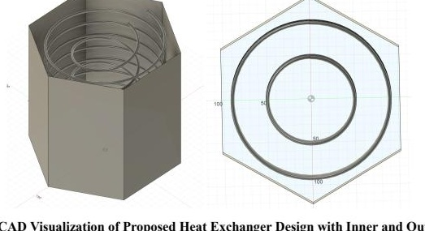

CHEME 3240 · Team project
Olin Hall Thermal Battery
Finding another use for waste heat.

Overview
Our team proposed a thermal battery to recover waste heat from Olin Hall’s steam distribution exhaust and release it when heating is needed.
The approach
Heat exchanger experiments informed a design using a phase change material and two concentric copper coils. The report evaluates heat transfer, storage capacity, cost, and potential emissions reductions.
A proposed engineering design supported by calculations and experimental analysis; the system has not been presented as an installed facility.